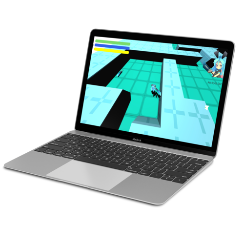

3Dローグライクゲームを作成いたしました。風来のシレンやトルネコの大冒険を参考に毎回自動でランダムにダンジョンが作成されるようにプログラミングをしています。随時Updateを行いSteamにリリース予定です。
制作期間:1ヶ月半
担当：全工程
スクレイピングを行い、データをExcelに自動集計させることを目的に作成しました。
制作期間:2日
担当：全工程
FX投資を行う際のデータを書き込むためのbotです。GoogleSpreadSheetに集計されます。トレードのデータベースとして使用することで、トレードの傾向や心理状況を書き込む事で独自のトレード手法を確立する手助けとなります。
制作期間:１週間
担当：全工程